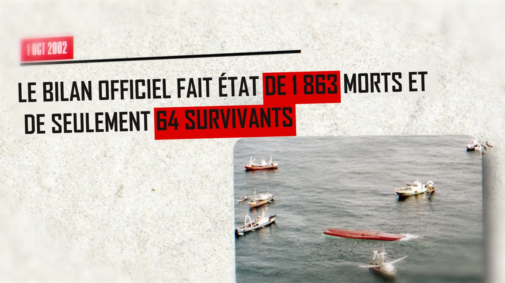
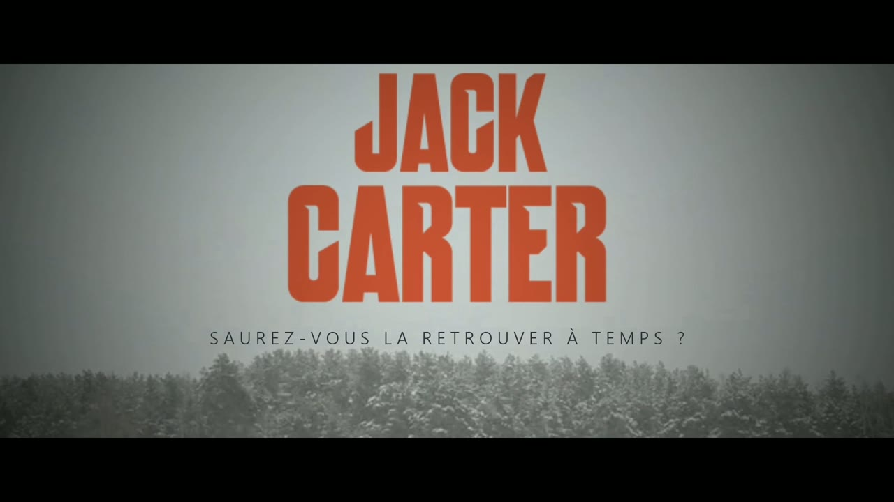
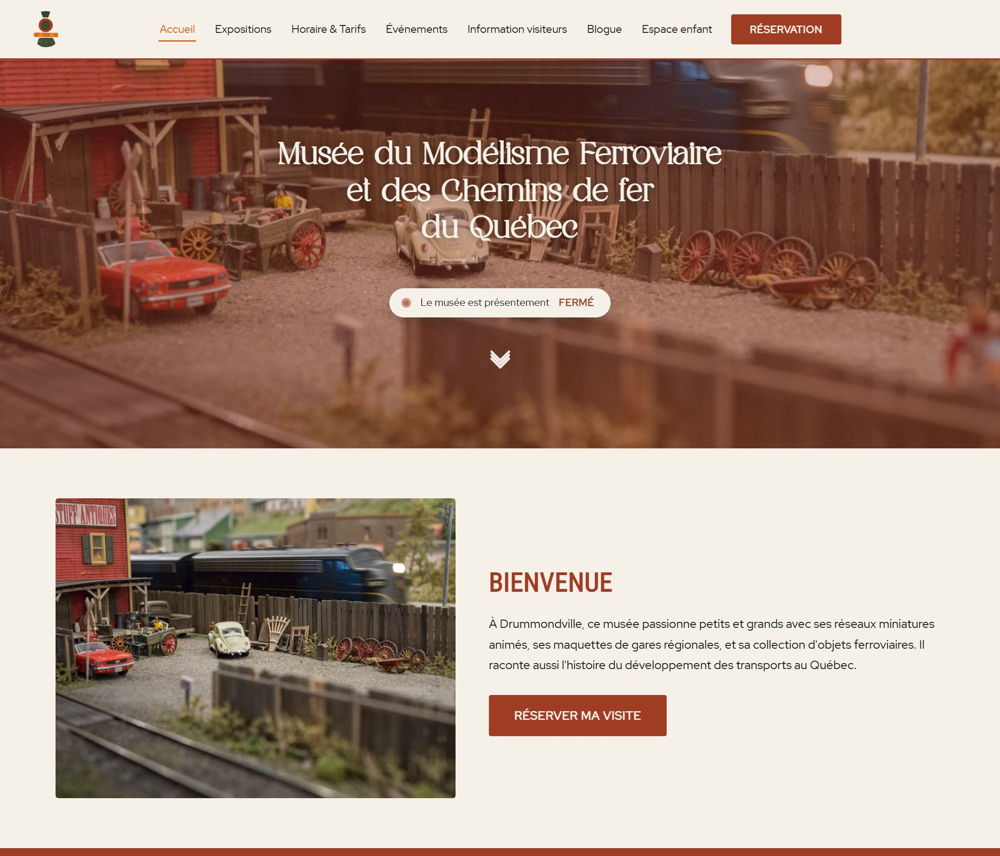
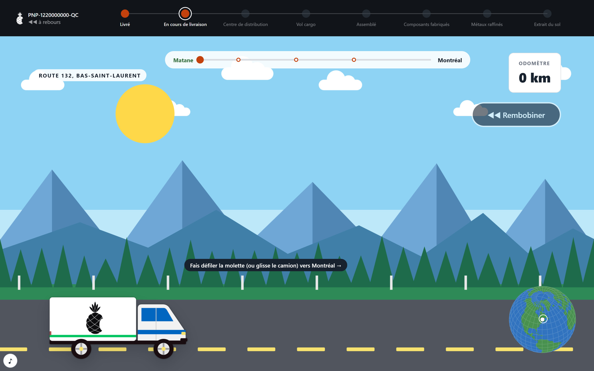
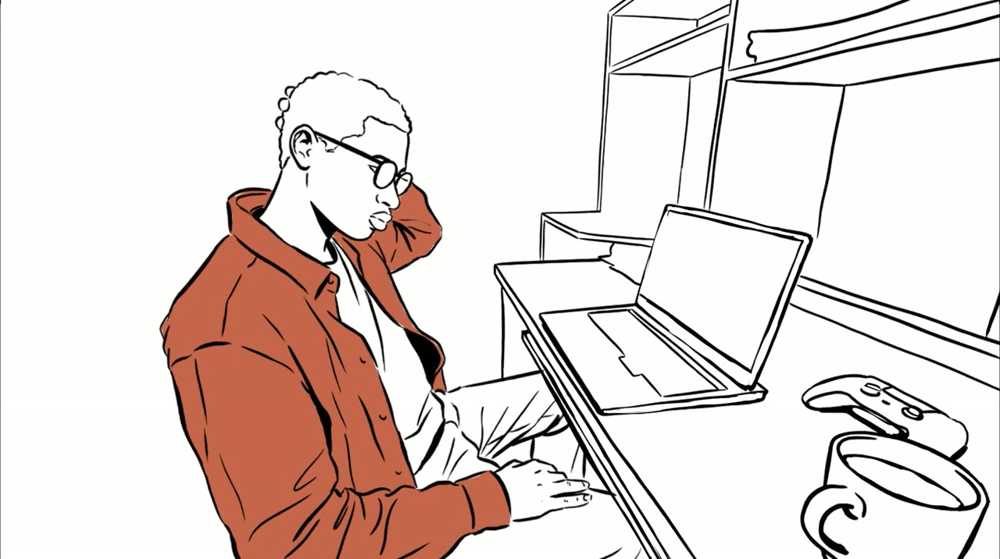
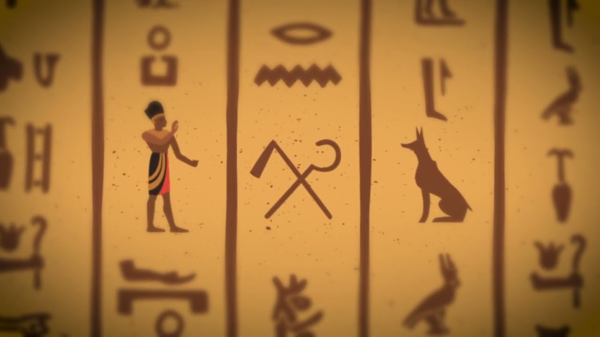
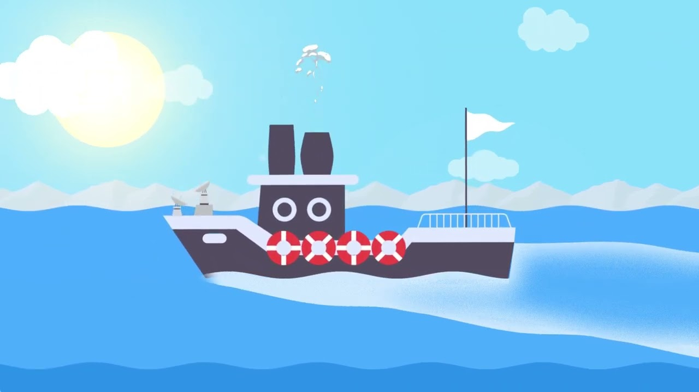
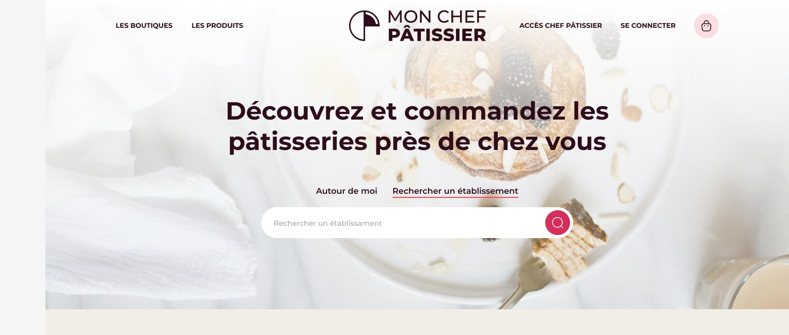

Le Joola
Court métrage documentaire sur le naufrage du Joola, l'une des plus grandes tragédies maritimes de l'histoire du Sénégal.
Une sélection de projets en vidéo, motion design, UX/UI et web.

Court métrage documentaire sur le naufrage du Joola, l'une des plus grandes tragédies maritimes de l'histoire du Sénégal.

Teaser d'une minute : la mission, les choix du joueur et leurs conséquences.
Application mobile complète pour un festival de films documentaires en Gaspésie : programmation, billetterie, hébergement et communauté.

Site web d'un musée : projet de groupe où j'ai assuré l'intégration web.

Boutique fictive de téléphones dont la page de suivi remonte le voyage du produit jusqu'aux mines : site de 24 heures (Webjam), en équipe.

Animation 2D en rotoscopie : 30 secondes redessinées image par image dans Photoshop.

Balado illustré qui raconte les événements passés de Narmer et Ménès : projet solo (After Effects, Illustrator, Audition).

Animation d'un bateau à vapeur en vectoriel, dans une ambiance calme : projet solo (After Effects, Illustrator, Audition).
Application mobile fictive de commande de repas : projet solo pour maîtriser les bases du UX/UI et de l'accessibilité.

Site fictif de pâtisseries artisanales avec commande en ligne : projet solo sur l'UX/UI et l'accessibilité.
Aucun projet dans cette catégorie pour l'instant.